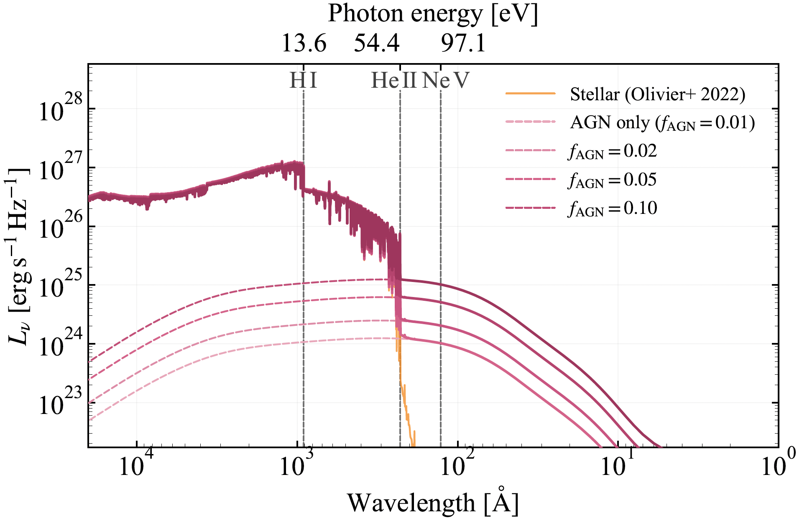
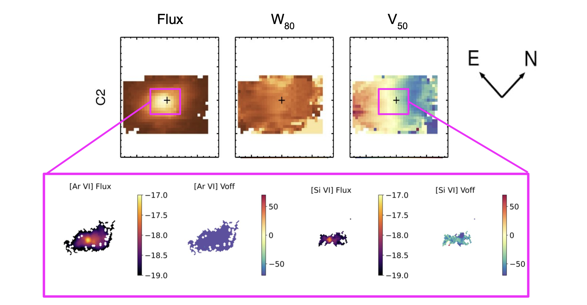
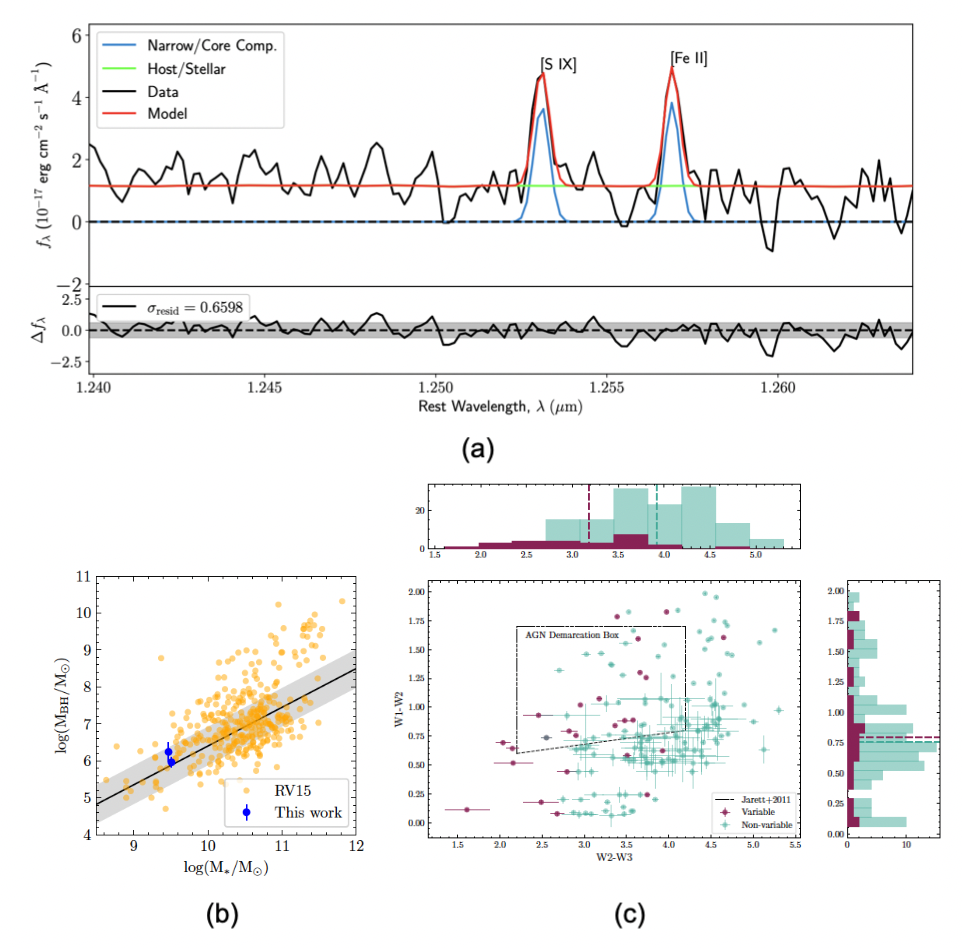
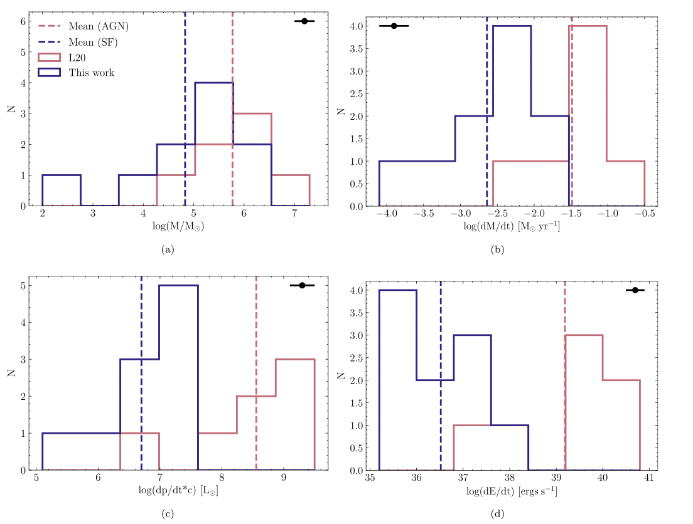

Research

The Little Engines That Could: Weakly Accreting IMBHs as a Possible Source of Hard Ionizing Radiation in Two EELGs
Aravindan et al., submitted, under review
Nearby extreme emission-line galaxies (EELGs) are compact, metal-poor, and intensely star-forming, making them local analogs of galaxies in the early Universe. In two of the most extreme examples, J1044+0353 and J1418+2102, stellar populations alone cannot produce the photons above 54.4 eV needed to power their strong He II emission. Using Cloudy photoionization models fit across emission lines spanning the full ionization structure, we test whether ultraluminous X-ray sources (ULXs) or an accreting intermediate-mass black hole (IMBH) can supply this missing hard radiation. ULXs fall short in both galaxies, but a weakly accreting IMBH of ~103–104.5 M☉ reproduces the observed spectrum. Although the black hole contributes only 2–6% of the hydrogen-ionizing photons, it produces more than 99% of the photons above the He II ionization threshold, while remaining hidden in standard UV and optical diagnostics. These results suggest that weakly growing black holes may be common but overlooked in star-forming dwarf galaxies, with direct implications for finding black hole seeds at high redshift.

Probing AGN-driven Feedback in Dwarf Galaxies with Spatially Resolved Near-infrared Coronal Lines from JWST
Aravindan et al. 2026, ApJ, 1000, 230
Confirming that outflows in dwarf galaxies are truly AGN-driven is challenging, since common tracers like [O III] can be contaminated by star formation. Coronal lines, which require ionization energies of up to ~450 eV, offer a cleaner probe of the AGN. Using JWST/NIRSpec integral field spectroscopy, we present the first spatially resolved study of near-infrared coronal lines in four dwarf galaxies hosting AGN-driven outflows. We detect 16 unique coronal line species, tripling the number previously found in dwarf galaxies from the ground, and show that AGN photoionization dominates their excitation. The coronal line region extends up to ~0.5 kpc, comparable in absolute size to that of massive galaxies but spanning ~10% of the host galaxy, versus ~1% in massive systems. The coronal lines are aligned with the [O III] outflows and their luminosities correlate with outflow luminosity, suggesting that AGN in dwarf galaxies can drive outflows energetic enough to perturb gas in their central regions.

A Closer Look at Dwarf Galaxies Exhibiting MIR Variability: AGN Confirmation and Comparison with Non-variable Dwarfs
Aravindan et al. 2024, ApJ, 975, 60
Detecting low-mass black holes in dwarf galaxies is challenging due to their faint signatures. We show that MIR variability can reveal AGNs in these galaxies, with 68% of variable MIR sources likely hosting AGNs. In J1205, the lowest-mass galaxy in our sample (log M* = 7.5 M☉) with a low gas-phase metallicity (12 + log(O/H) = 7.46), we detected a near-infrared coronal line. We also observed broad Paα lines from the broad-line region in two galaxies, and found that AGN activity causes redder W1−W2 colors in variable galaxies, while star formation dominates in non-variable ones. These findings suggest that MIR variability is a valuable method for identifying AGNs in low-mass galaxies.

A Comparison of Outflow Properties in AGN Dwarfs versus Star-forming Dwarfs
Aravindan et al. 2023, ApJ, 950, 33
Gas outflows in dwarf galaxies are crucial for regulating feedback and shaping star formation processes. Using integral field spectroscopy, we analyzed ionized gas outflows to compare the energetics of those driven by stellar activity versus AGN. Our study revealed that AGN-driven outflows are significantly faster and more energetic than their stellar-powered counterparts. This work aims to provide constraints on AGN feedback models in simulations of dwarf galaxies, offering new insights into their evolution and dynamics.
See my full publication list, abstracts, and citation metrics on my NASA ADS library.